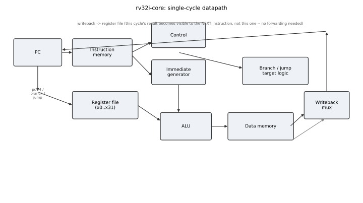

Write-up · Digital design / VLSI
Building a RISC-V CPU, and the bug that only showed up as a hang
I wrote a single-cycle CPU in Verilog that runs the full RV32I base instruction set, plus an assembler so test programs are readable source. It passes 32 simulation tests and a Verilator lint, and synthesizes with Yosys to 3,918 generic gates and 992 flip-flops. The most useful thing it taught me came from a bug: a register-file shortcut I thought was necessary created a combinational loop, and the only symptom was a simulator that never finished.
Why this project
My other projects are device-level or system-level: HEMT physics, antennas, power converters, firmware. None of them involved designing digital logic in a hardware description language, which is the other half of the VLSI work I want to do in graduate school. A small CPU is the standard way to learn that half, because it forces every part of the flow: instruction decode, datapath design, verification and synthesis.
Design

The core implements every RV32I instruction: arithmetic, logic, shifts, loads and stores of bytes, halfwords and words, all six branches, jumps, and the two upper-immediate instructions. It is single-cycle on purpose. A pipeline would add hazards, forwarding and stalls, and I wanted the first design to be one I could verify completely before adding that complexity.
I also wrote a two-pass assembler in Python rather than depending on the RISC-V GNU toolchain. It encodes all six instruction formats and a few pseudo-instructions, and it refuses inputs it cannot encode correctly instead of silently producing the wrong bits.
Verification
Every test runs the real RTL in Icarus Verilog and reads back the register file and data memory:
- 30 instruction-level tests, aimed at the cases that are easy to get backwards:
sraversussrl,bltversusbltuon the same operands,lbversuslbusign extension. - Two complete programs, a recurrence and a bubble sort, checked against independent Python models rather than values copied from the simulator.
- Verilator lint as a second, independent opinion on the RTL, and CI that reruns everything on each push.
The bug
My first register file forwarded write data straight to the read ports, so an instruction reading a register in the same cycle it was written would see the new value. I assumed it was needed for correctness, as it is in a pipelined design. A single-cycle design does not need it: the value being written is the current instruction’s own result, not an input to it.
Worse, it made a real loop. For addi t0, t0, -1, the ALU output fed the write port, the write port fed the read port, and the read port fed the ALU. The simulator never produced a wrong answer; it simply stopped advancing time. Tracing that hang back to a loop in the logic, and then to a design assumption carried over from pipelines, was the most useful part of the project. The fix was deleting the forwarding path.
Synthesis
Yosys maps the register file, ALU, immediate generator and control unit to generic logic gates: 3,918 combinational cells and 992 flip-flops (31 registers of 32 bits; register zero is hard-wired and needs none). The memories are excluded, because at any real size they would be SRAM macros, not flip-flops. These are logic-complexity counts. Without a real process design kit there is no honest area, power or clock-frequency figure, so I do not quote one.
What I would do next
Add the open SkyWater 130 nm PDK and an OpenROAD place-and-route flow to get real area and timing numbers, then pipeline the core into five stages with the forwarding and hazard logic the single-cycle version avoids, and verify it with a directed hazard test suite.